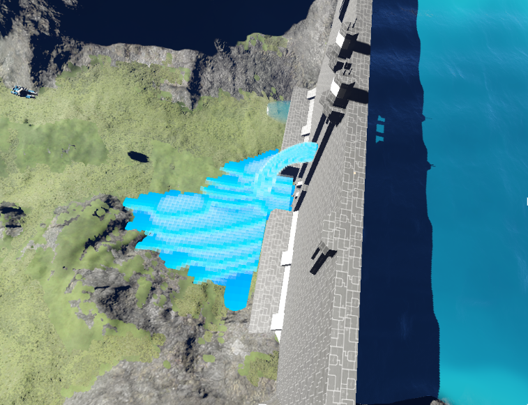
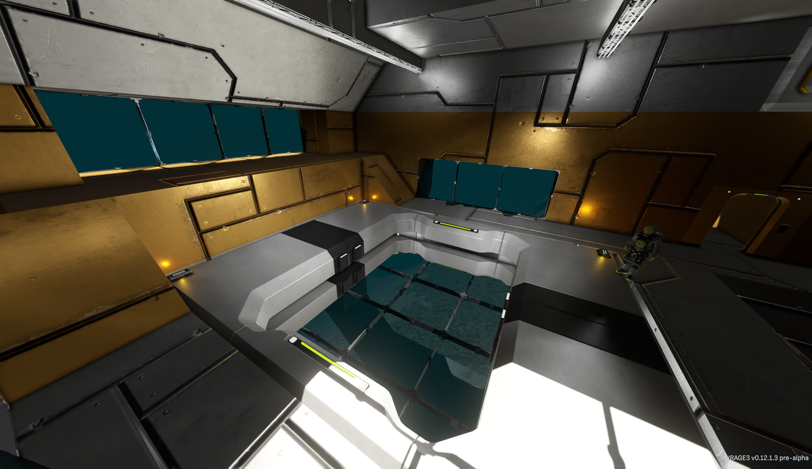
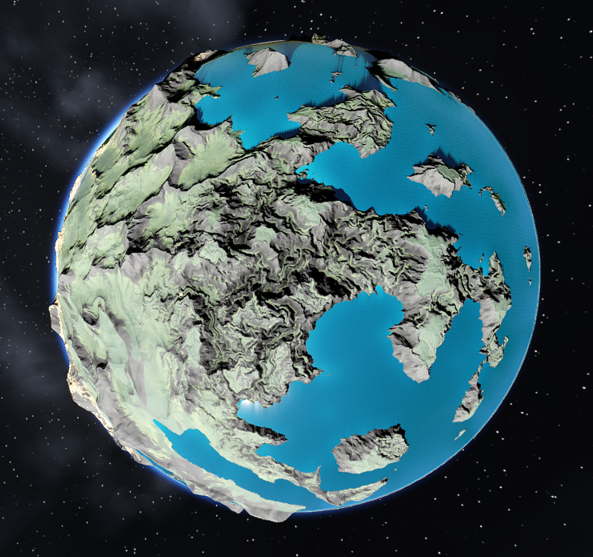
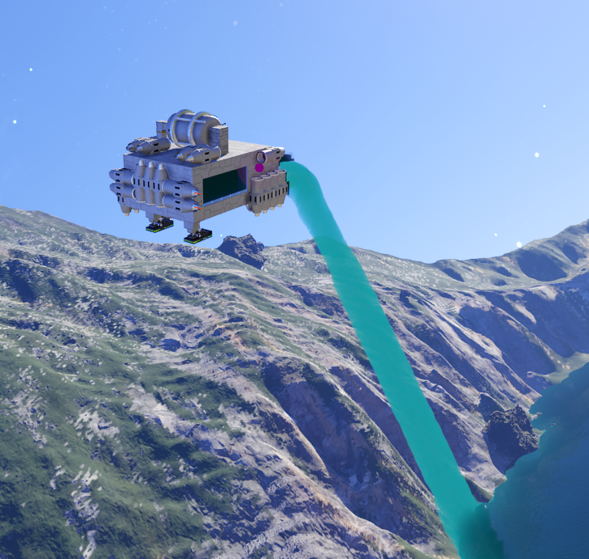
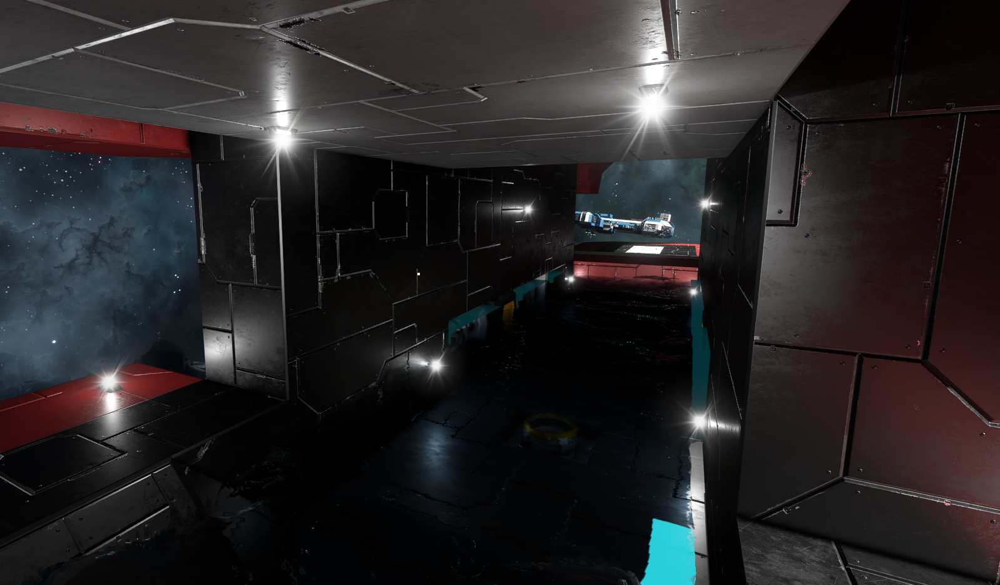
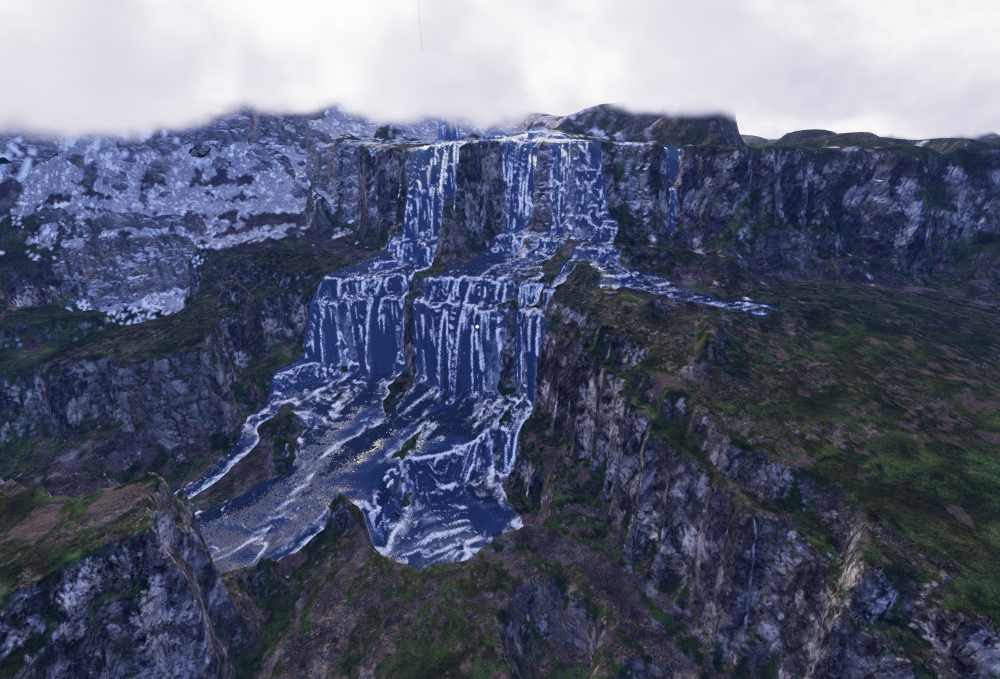
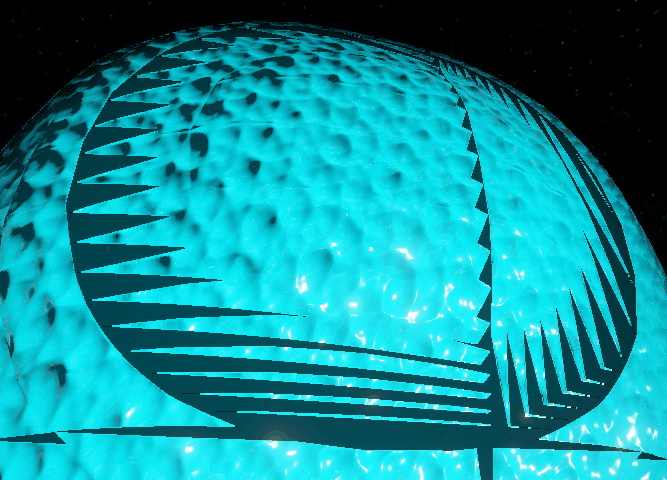
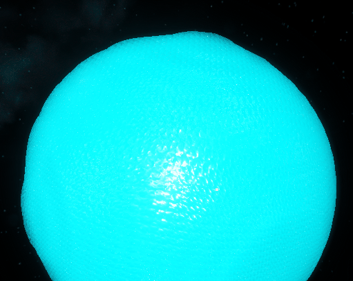
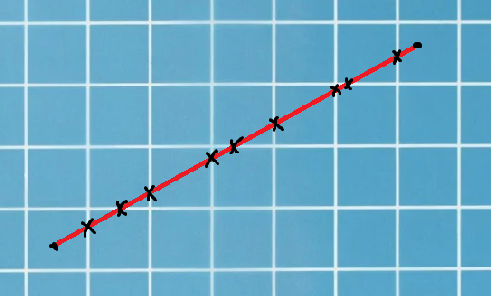
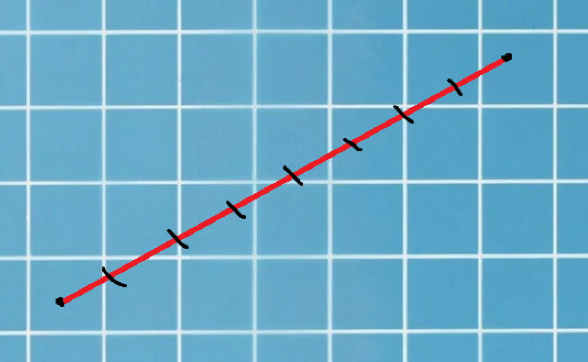

VRage Developer, Water and Fluids
Developed experimental volumetric water in VRage for Space Engineers 2. Contributions include planetary oceans, local-space water domains, constant water sources, water activation, DDA raymarching, and surface refinement reduced from 32 steps to 5.
I worked on the VRage game engine used in Space Engineers 2 on the Water Team, developing an experimental water simulation. I used my strong math and physics background to develop a unique non-compressible volumetric fluid simulation. I also spoke for my team in company-wide meetings, breaking down complex concepts into entertaining deliverables I would deliver in front of dozens of people.


Planetary Water and Oceans
One of the “biggest” features I designed and developed during my time at Keen was bringing oceans to planets. This feature would create a massive non-simulated water surface in the shape of a section of a sphere. The algorithm begins by scanning the planet directly, assessing where to place “ocean tiles” by checking the terrain and the desired water level (based on the biome).

What makes these ocean tiles so powerful is that they could easily convert into fully simulated water seamlessly when interacted with. Between surface waves and the water being converted on digging into the terrain or building structures, the illusion would be maintained that the whole ocean is simulated.
Water Domains
I designed and developed a method to split the water simulation into multiple independent “domains” that could be attached to player-built structures and planets. Each domain simulated water in the local space of its attachment, using rotation and translation to follow the structure or planet it belonged to.
This allowed more detailed water collisions and made it possible to simulate water inside a moving ship. A ship’s water simulation could move and rotate with the ship, keeping the water in the same local space as its interior.


Constant Water
One of the first major changes I made to the existing water algorithm was to make a new type of flag that could be added to water cells to mark them as “Constant”. These sections of water marked as constant would no longer change, altering their behavior to act as an infinite sink or source.
This feature would go on to fuel a lot of features, like river heads, by acting as an infinite “spring”. The use of constant water in the oceans was much more stable, allowing the shoreline to remove the excess water that flowed into it and eventually return to a base water level.
In this screenshot the Waterfall is formed from a constant spring at the top of the hill.

Water Activation System
I designed and developed the water activation system, using changes in density and velocity across simulation frames to determine which water cells would be activated and allowed to simulate the next frame. This focused simulation work on the cells where the water was changing.
The system also used distance to the nearest viewer to fade out simulation when no one was watching and restart it when someone approached. Together, these controls let the simulation respond to both water activity and viewer proximity.
DDA Raymarcher
In my first year at Keen, one of my first major graphics programming tasks was to completely remake our water-rendering raymarcher. This was a really exciting task where I converted our messy fixed-step raymarcher (which would often miss the water surface entirely!) to a new DDA raymarcher, both more accurate and more efficient.
Below shows a before and after with the old raymarcher missing the surface.


An Algorithm that Never Misses
DDA stands for Digital Differential Analyzer, and it is a great way to raymarch a 3D texture. DDA will take a start point and a direction and give the exact distances that the ray will pass from one “block” into another, as well as provide the direction the ray had to step in. Because it checks every point where new watercells are being evaluated, it is impossible to ever miss the water surface. With fixed step size the water surface can be missed entirely.
I was also able to optimize the query system so that already queried water cells would be cached during the march. So each query would only check 4 cells instead of all 8, saving a little time.


Refinement Optimization
The refinement step is where an exact hit location is determined from a hit. This means that in the previous step, the “density” of the water is below some iso-value, and in the current step, it is above that iso-value. The goal of the refinement is to find the exact distance where it crosses that isovalue.
Previously, we did a simple binary search, bisecting the line segment several times right down the middle. This necessitated using a high number of bisections before the location was precise enough to form a smooth surface. I replaced this with a weighted bisection algorithm that used the density at both points to cut the line segment where it predicts the isovalue will be. The result was able to render a smooth surface in just 5 steps instead of 32 steps, saving lots of time.